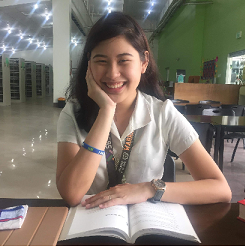

|  |
|---|
Jyan Marechiarre G. Casas |
| Banilad, Cebu City, Philippines, 6000 || +63 932 784 7948 || casasdemare@gmail.com |
| PROFILE |
|---|
| I am a third year Computer Engineering Student ready to utilize my skills and passion.
Technologically adept, offering experience with various social media platforms, office technology programs, and advanced computer skills. Bringing forth a positive attitude and the willingness and motivation to learn more. |
| EDUCATIONAL BACKGROUND | EXTRACURRICULAR AND VOLUNTEER ACTIVITIES |
|---|
| University of San Carlos - Talamban Campus BS Computer Engineering | 2019 - present University of San Carlos - Talamban Campus Senior Highschool | 2017 - 2019 Woodridge International School Junior Highschool | 2013 - 2017 Woodridge International School Elementary| 2009 - 2013 |
|
| SKILLS | LANGUAGES |
|---|
| WORKING EXPERIENCE | ||
|---|---|---|
| Joycee Pharmacy May 2015 - March 2017 | ||